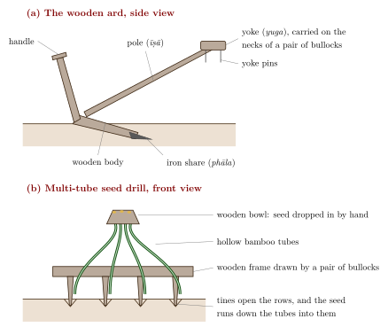

Chapter 7: Soil, Tillage and Implements¶
Farmers everywhere know their soils intimately, and Indian farmers were no exception. Yet the written record of that knowledge is thinner and more scattered than is often supposed. No surviving Sanskrit text is a treatise on soils in the way the Bṛhatsaṃhitā has chapters on rain or on finding groundwater. What we have instead is a vocabulary of land spread across Vedic hymns, grammar, lexicons, statecraft, medicine and architecture; a handful of practical instructions on manure in the agricultural texts; and a much larger body of practice—names for soils, ways of feeding and protecting them—that was recorded mainly by colonial officials, ethnographers and agronomists from the nineteenth century onwards. This chapter keeps these layers apart. It first sets out what the texts say about land, then what farmers did to keep it fertile and in place, how salinity became a large problem in the canal era, and how modern soil science classifies India’s soils. The second half of the chapter turns from the soil to the work done on it: the plough and its history, the implements used to prepare the seedbed, to sow, weed, reap, thresh and winnow, the draught animals and village artisans on whom these tools depended, the mechanisation of the twentieth century, and the division of field work by caste and gender.
The Kṛṣi-Parāśara does not classify soils at all (Chapter 3), and no Sanskrit text matches its colour words for soils with the soil orders of modern science.
7.1 Words for Land in Early Texts¶
7.1.1 Vedic vocabulary¶
The Ṛgveda already distinguishes cultivated land from the rest of the landscape. The field is kṣetra, and a whole hymn (RV 4.57) is addressed to the “Lord of the Field” (kṣetrasya pati) together with the plough, the ploughshare and the furrow (sītā) (Jamison and Brereton 2014). The word urvarā denotes arable or fertile land; winning or possessing urvarā is among the goods for which the poets pray, alongside cattle, sons and water. The earth as a whole (bhūmi, pṛthivī) is celebrated at length in the Pṛthivī Sūkta of the Atharvaveda (AV 12.1; Section 2.7), which praises the earth’s fertility, its plants and its waters; but it is a hymn, not a description of soils.
Barren and saline ground also has a name. Ūṣa is saline earth, and land impregnated with it is ūṣara. In the Brāhmaṇa accounts of setting up the sacred fires, saline earth is one of the materials ritually gathered and laid down, along with sand, gravel and the earth thrown up by moles—an indication that these different kinds of earth were recognised and named, even if the context is ritual rather than agricultural. In later Sanskrit ūṣara becomes the standard word for land on which nothing will grow, and the word survives in north Indian usage as usar (Section 7.7).
7.1.2 Grammar and lexicon¶
Pāṇini (c. 4th c. BCE) records a productive way of naming fields after the crops for which they are suited. His rules on secondary derivatives (Aṣṭādhyāyī 5.2.1–4) form words such as vraiheya and śāleya (“a field fit for vrīhi / śāli rice”), yavya (“fit for barley”), tilya or tailīna (“fit for sesame”), māṣīṇa (“fit for black gram”) and maudgīna (“fit for green gram”). The grammar thus preserves a classification of land by use: what mattered was what a field would grow.
The Sanskrit lexicon Amarakośa (first millennium CE; its date is uncertain, though often placed around the sixth century) gathers land-words in its section on the earth. It glosses urvarā as land rich in every kind of crop, gives ūṣa as saline earth and ūṣara for land containing it, and lists terms for desert (maru, dhanvan), dry ground (sthala) and the field (kṣetra, kedāra). Like Pāṇini, it reflects the vocabulary of educated speakers rather than a farmers’ manual, but it shows that fertile, saline, desert and dry land were standard categories.
7.1.3 The Arthaśāstra¶
The Arthaśāstra (composite, c. 50 BCE–300 CE; see Volume 18, Rājanīti and Dharmaśāstra) approaches land as an administrator does. In Kangle’s and Olivelle’s translations, the village accountant (gopa) is to record the land of each village by category: cultivated and uncultivated (kṛṣṭa, akṛṣṭa), dry land and wet, embanked fields (sthala, kedāra), gardens and orchards, groves, enclosures, forest, house sites, shrines, irrigation works, cremation grounds and so on (Kangle 1965; Olivelle 2013). The distinction between sthala, land depending on rain, and kedāra, bunded fields that hold water (above all for rice), runs through later Indian agrarian vocabulary.
The chapter on the superintendent of agriculture (sītādhyakṣa, Book 2, chapter 24) adds a finer, practical grading of micro-sites. As Kangle renders it, land struck by river foam (the edges of a river bed) suits creeper fruits such as gourds; the margins of overflow channels suit long pepper, grapes and sugarcane; the surroundings of wells suit vegetables and root crops; the edges of moist beds suit green herbs; and the ridges between beds suit fragrant and medicinal plants. This is a classification by moisture and position in the landscape, the kind of judgement every gardener makes, and it is one of the few passages in early Sanskrit prose that matches particular crops to particular ground. The chapter does not set out a system of manures; its other contents are summarised in Section 2.11.1.
7.2 Land, Ecology and Medicine: Jāṅgala and Ānūpa¶
The most developed classification of land in Sanskrit comes from medicine, not agriculture. Āyurvedic texts divide country (deśa) into jāṅgala, ānūpa and sādhāraṇa. Jāṅgala land is dry and open, with sparse thorny trees, hard soil, clear skies and wind; it is considered healthy, and its animals (antelope, deer and game birds) yield the light meats the physicians prized. Ānūpa land is marshy and well watered, with dense vegetation, rivers and lakes, heavy air and the diseases of phlegm and wind. Sādhāraṇa is the balanced, intermediate type. Francis Zimmermann’s classic study showed that this is an ecological theory linking landscape, animals, food and bodily humours (Section 1.6; (Zimmermann 1987)). Caraka uses the scheme when advising where medicinal plants should be gathered and where patients fare best (Sharma 1981).
The plant-science texts borrowed the same frame. Surapāla’s Vṛkṣāyurveda (c. 10th–11th c.) describes land as ānūpa, jāṅgala and sādhāraṇa, judges ground by its colour and other qualities, and names trees suited to each kind; it also explains the ailments of trees as disorders of vāta, pitta and kapha, with treatments to match (Sadhale 1996). The Upavanavinoda of the Śārṅgadharapaddhati (1363) has a comparable section on judging ground for a garden (Majumdar 1935). These works apply Āyurvedic categories to plants and to the land they grow in; they do not classify soils themselves into vāta, pitta and kapha types. The Vṛkṣāyurveda tradition, including its fermented plant-feeds such as kuṇapajala, is treated in Chapter 4.
Classifying land by what it does
Across the early sources land is classified by use and by water: what it will grow (Pāṇini’s crop-fields), whether it holds water (sthala and kedāra), where it lies in relation to a river or well (the Arthaśāstra), whether it is saline (ūṣara), and whether the country as a whole is dry or marshy (jāṅgala, ānūpa). This is closer to a modern “land capability” assessment than to a soil taxonomy, and it is better described in those terms than as an anticipation of pedology.
7.3 Judging the Ground: Tests in Bṛhatsaṃhitā and Vāstu Texts¶
The physical tests of soil that do appear in Sanskrit belong to architecture. Varāhamihira’s chapter on building (vāstuvidyā, Bṛhatsaṃhitā 53 in Bhat’s numbering) and the later vāstu manuals tell the builder how to examine a house site (Bhat 1981). A pit is dug and then refilled with the same earth: if earth is left over, the site is excellent; if it just fills the pit, it is middling; if it falls short, the site is poor. A loose soil that cannot be packed back is thus judged inferior, a sensible test of compaction and bearing capacity for a building. A pit may also be filled with water and checked after an interval to see how much has drained away. Beyond these tests, ground is judged by colour, smell and taste, and by the plants growing on it; Varāhamihira assigns soils of different colours and tastes as suitable for the houses of the different varṇas, white for brahmins, red for kṣatriyas, yellow for vaiśyas and dark for śūdras, a reminder that these tests were embedded in a social hierarchy as well as in practical judgement.
Two cautions follow. First, these are tests of a building site, not of agricultural fertility; they should not be presented as “traditional soil testing for crops”. Second, they do not amount to a systematic analysis of agricultural soils. Farmers certainly looked at, handled and smelled their soil, and in saline tracts a salty crust or taste was an obvious warning; but these were the ordinary judgements of experience, and they are best described as such.
Varāhamihira’s separate chapter on finding underground water (dakārgala, Bṛhatsaṃhitā 54) also reads the ground, using plants, termite mounds, the colour of soil and stones as signs of water at a given depth. It is discussed in Chapter 8.
7.4 Farmers’ Soil Vocabularies¶
Every farming region of India has its own names for soils, usually based on texture, colour, moisture behaviour and the crops they carry, and many of these entered English through revenue settlements and district gazetteers. A few are especially well established.
-
In the Ganga–Yamuna Doab and much of north India, cultivators distinguish matiyār (stiff clay), dumaṭ or domaṭ (loam) and bhūr (light sand), terms that colonial settlement officers adopted for assessing revenue.
-
In Bundelkhand, the heavy black soils are mār and kābar, the lighter brown soils paṛuā, and the thin, stony upland soils rākaṛ.
-
The black cotton soils of the Deccan were known to British observers as regur, a word taken from Telugu (regaḍa); in Tamil Nadu the black-soil country of the south is called karisal.
-
In Tamil literature the agricultural lowland of paddy fields is the marutam landscape, one of the five tiṇai of Saṅgam poetry (Chapter 2).
Such vocabularies are local and practical. A word like mār carries knowledge of how the soil behaves—that it cracks when dry, holds moisture for a winter crop, and becomes unworkable when wet—which no colour term alone conveys. They do not map neatly onto Sanskrit words or onto modern soil orders, and attempts to force them into a single pan-Indian scheme lose exactly the local precision that makes them valuable.
7.5 Keeping Land Fertile¶
7.5.1 Manure in the agricultural texts¶
The Kṛṣi-Parāśara, a late text probably from Bengal, is the clearest early Sanskrit witness to deliberate manuring. It treats cow dung as the essential fertiliser: dung is to be accumulated in a pit or heap through the cold season, dried and broken up, and carried to the field to be laid down in small heaps before sowing, with the text insisting that crops without manure do not prosper (Majumdar and Banerji 1960; Sadhale 1999). This fits its wider concern with the cattle shed and the welfare of cattle, which are the source of both draught power and manure (Chapter 3). The Vṛkṣāyurveda texts go further in prescribing special preparations for trees and gardens, including the fermented kuṇapajala; those recipes belong to horticulture and are treated in Chapter 4.
7.5.2 Manuring in practice¶
For the field crops of ordinary farmers the evidence comes mainly from the nineteenth and twentieth centuries, when officials and agronomists described what they saw. The most important single witness is the agricultural chemist John Augustus Voelcker, consulting chemist to the Royal Agricultural Society of England, whom the Secretary of State sent to India in 1889 to advise on the application of agricultural chemistry. He toured the provinces until 1891, and his Report on the Improvement of Indian Agriculture (1893) is the most careful contemporary assessment of Indian farming practice (Voelcker 1893). Voelcker concluded that Indian cultivators managed their land with considerable skill; that their mixed cropping, rotations and weeding were in many respects as good as British practice; that their implements were in general suited to their soils, cattle and means; and that the main obstacles to higher yields were not ignorance but shortages of water, manure, fuel and credit. The shortage of manure he traced above all to the burning of cattle dung as fuel for want of firewood. He also urged the government to employ trained scientists, a recommendation that bore fruit in the research institutions described in Section 19.4. Later chapters refer back to this account. The practices he and others recorded include the following.
- Farmyard manure.
- Dung, urine-soaked litter and household sweepings were collected in pits and carried to the fields, often by women, who also made the dung cakes that competed with the fields for the same material. The best-manured land was usually the land closest to the village.
- Folding livestock.
- In the Deccan and the south, herders of sheep and goats were paid in grain or cash to pen their flocks overnight on a farmer’s field before sowing, so that the dung and urine were deposited directly on the soil. Such arrangements linked settled cultivators and mobile pastoralists in a long-standing exchange (Chapter 13).
- Tank silt.
- Where tanks were common, the silt that accumulated on the tank bed was dug out in the dry season and carted to the fields, at once restoring the tank’s storage and returning fine soil and organic matter to the land (Chapter 8).
- Green manure and leaf manure.
- Crops such as sunn hemp (Crotalaria juncea) and dhaiñcā (Sesbania species) were grown and ploughed in, especially before rice, and green leaves and twigs lopped from trees and shrubs (for example Pongamia pinnata) were trampled into puddled rice fields in the south and west.
- Oilcakes.
- The cake left after pressing oilseeds in the village oil mill (Chapter 14) was used as cattle feed and as manure for valuable crops such as sugarcane and tobacco; neem cake was valued as well for its insect-deterring properties (Schmutterer 1995).
- Ash and burning.
- Ash from household fires and burnt crop residues was spread on fields. In the Konkan and along the Western Ghats, the rāb method of preparing rice nurseries involved burning layers of branches, leaves, dung and grass on the seedbed before sowing.
- Legumes, rotation and fallow.
- Pulses were grown in rotation or as mixed crops with cereals, and land was rested when it could be spared. Farmers valued pulses because cereals did well after them; the biological explanation, nitrogen fixation by root-nodule bacteria, is a nineteenth-century discovery and should not be read back into the practice. Rotations and mixed cropping are discussed in Chapter 9.
Albert Howard drew on these practices of collecting and rotting wastes when he developed the “Indore process” of composting, a well-documented instance of Indian farm practice shaping a modern method (Section 10.7).
Debate: Sustainable by design?
It is tempting to describe these practices as a balanced system that kept Indian soils fertile for millennia. The reality was more uneven. Manure was scarce and unequally distributed; the fields of landholders near the village received it, while distant and poorer fields often did not. Many soils were farmed at low yields precisely because nutrients were not replaced, and the burning of dung for fuel was a response to a shortage of wood that had its own ecological history (Chapter 11). The practices recorded here are best understood as ingenious responses to constraints, not as a finished science; their value for today’s agriculture has to be tested, not assumed (Chapter 10).
7.6 Holding Soil and Water in Place¶
On the plains the commonest conservation structure was the earthen field bund. Bunds hold rainwater on the field long enough to soak in, keep rice fields flooded, and stop topsoil washing away in heavy monsoon storms. In the black-soil country of the Deccan, bunds and small embankments across gentle slopes conserved the moisture on which the post-monsoon crop depended. In the Thar the khadin, an earthen embankment built across a slope to pond runoff, turns the silt and moisture left behind into a cultivable field (Chapter 8).
In the hills the characteristic solution is the terrace. Bench terraces with earth or dry-stone risers are cut into slopes throughout the Himalaya, from Himachal Pradesh and Uttarakhand to Sikkim, and along parts of the Western Ghats. In the North-East, the Angami Nagas build irrigated rice terraces on steep hillsides, and the Apatani of the Ziro valley in Arunachal Pradesh farm a levelled, bunded and canal-fed valley floor in which rice is grown together with fish. The zabo system of the Chakhesang Nagas links protected forest above, water-harvesting ponds and cattle yards with rice fields below, so that runoff carries manure down to the crops (Agarwal and Narain 1997). These are the work of communities whose knowledge is discussed further in Volume 23, Jana–Jāti.
Shifting cultivation (jhūm in the North-East, with many local names elsewhere) handles fertility in a different way: forest is cleared and burned, cropped for one or two years, and then left to regrow for a long fallow during which the soil recovers. Where fallows are long it can be a stable system; where population pressure or land loss shortens them, soils degrade. Colonial and post-colonial states often condemned it wholesale. It is treated in Chapter 10.
7.7 Saline and Alkaline Land: Ūṣara, Usar and Reh¶
Saline and alkaline soils occur naturally in the semi-arid parts of north and west India, where evaporation draws dissolved salts to the surface and leaves a white or grey crust. Villagers in the Ganga plain call such land usar (from Sanskrit ūṣara) and the salt efflorescence reh. Some communities made use of it: saline earth was a source of salt and saltpetre, and specialised castes such as the Nonias of north India worked it. For cultivation, however, usar was largely written off, used at most for grazing.
The problem became much larger in the nineteenth century. The great canals of the Doab and Punjab (Chapter 8) delivered water without adequate drainage; in many tracts the water table rose, land became waterlogged, and reh spread over fields that had previously been cultivated. Colonial officials recognised the problem by the 1870s, and historians of the canal regime have treated waterlogging and salinisation as among its most serious ecological costs (Kumar 1983; Ludden 1999). Farmers’ remedies—flushing salts with water where drainage allowed, adding manure, growing tolerant crops—were limited, and large-scale reclamation of sodic soils with gypsum and drainage is a twentieth-century development. Salinity in irrigated land remains a major problem in north-western India today.
7.8 Modern Soil Science and the Indian Soil Groups¶
Scientific soil survey in India began under colonial rule and was developed after independence by the Indian Council of Agricultural Research and its soil survey institutions. The broad grouping now taught in Indian schools and used in general surveys is summarised in Table 7.1. Internationally, these soils are also described in the categories of the United States Department of Agriculture’s Soil Taxonomy (for example, many black soils as Vertisols), but the correspondence between the two systems is approximate.
| Group | Main occurrence and origin | Characteristic properties and uses |
|---|---|---|
| Alluvial | Indo-Gangetic and Brahmaputra plains, coastal plains and deltas; river-deposited sediments | Generally fertile, from sandy to clayey; the basis of the rice and wheat agriculture of the plains |
| Black (regur) | Deccan plateau of Maharashtra, Madhya Pradesh, Gujarat and adjoining areas; mainly weathered basalt | Clay-rich, swelling when wet and cracking deeply when dry; retain moisture; cotton, sorghum, pulses and post-monsoon crops |
| Red and yellow | Much of peninsular and eastern India; weathered crystalline rocks | Usually light-textured and low in nutrients; millets, pulses, groundnut, and rice where irrigated |
| Laterite | High-rainfall uplands: Western Ghats, Odisha, parts of the North-East | Strongly leached, rich in iron and aluminium; plantation crops such as cashew, tea, coffee and rubber, with manuring |
| Arid (desert) | Rajasthan and adjoining dry regions | Sandy, low in organic matter; productive where water is available |
| Saline and alkaline | Patches in dry regions, poorly drained irrigated land and coasts | Salt crusts and sodic conditions; require drainage and reclamation |
| Peaty and marshy | Waterlogged coastal tracts, e.g. Kuttanad in Kerala and parts of the Sundarbans | High in organic matter, often acidic |
| Forest and mountain | Himalaya and other hill ranges | Thin and variable, depending on slope and vegetation |
This grouping is a modern scientific construction based on parent material, climate and laboratory analysis. It is useful to know it, both because it describes the ground on which Indian agriculture actually takes place and because it shows how the old local vocabularies relate to the landscape: regur, karisal, mār and kābar all name variants of the black soils, while bhūr and dumaṭ describe textures within the alluvium. But there is no basis for equating particular Sanskrit colour words with particular modern soil orders, and no evidence that the Sanskrit texts possessed a soil taxonomy comparable to this one.
7.9 The Plough¶
Cross-Reference: Field work elsewhere in this volume
The Kalibangan field and the Vedic hymns to the plough are discussed in Chapter 2; the plough passage and the farming rites of the Kṛṣi-Parāśara in Chapter 3; water-lifting devices in Chapter 8; seeds and mixed cropping in Chapter 9; draught breeds in Chapter 13; and husking, grinding and grain storage in Chapter 14. The sections that follow concentrate on the implements and the work done with them.
7.9.1 The Indian ard¶
Until well into the twentieth century almost all ploughing in India was done with an ard: a plough that cuts a furrow and stirs the soil but, having no mouldboard, does not turn it over. The common form was made by the village carpenter, almost entirely of wood. A pointed body carried the share at its tip; a single handle rose from it for the ploughman to grip and to press the point into the ground; and a long pole ran forward from the body to the yoke (Figure 7.1a). The share, a pointed iron bar or small iron blade fixed to the point of the body, was the one part that had to be renewed regularly by the smith. The yoke lay across the necks of a pair of bullocks, in front of the zebu’s hump, against which the animals pushed. In many wet-rice tracts and on heavy soils buffaloes replaced bullocks, and in western Rajasthan a plough was often drawn by a single camel. The whole implement was cheap, could be made and mended in the village, and was light enough to carry on the shoulder to a distant field.

Because the ard does not invert the soil, a field was ploughed several times, often in different directions, until the clods were broken and the surface reduced to a fine tilth; criss-cross ploughing of this kind is what the Early Harappan field at Kalibangan preserves. How often a field was ploughed depended on the crop, the soil and the farmer’s means. Land for wheat or sugarcane was usually worked more thoroughly than land for rain-fed millets, and the farmer who could plough often, and at the right moment, was the farmer who owned his own bullocks. In the rice country of the east and south the plough was also driven through standing water to churn the field into soft mud before transplanting. This puddling buries weeds, levels the field and reduces the loss of water through the soil.
Ploughs differed from region to region in weight, length of pole and shape of body and share, according to the soil and the animals available: light ploughs for the small cattle of the eastern rice country and for narrow hill terraces, and, on the black soils of the Deccan, where the ordinary plough was used sparingly (Section 7.10), occasionally a heavy plough drawn by several pairs to break the ground deeply and root out persistent weeds. In shifting cultivation the burnt clearing was sown with a digging stick and worked with the hoe, and the plough had no part (Chapter 10). Table 7.2 lists some common field implements with representative regional names.
| Implement | Representative names | Use |
|---|---|---|
| Plough | Sanskrit lāṅgala, sīra, hala; Hindi hal; Tamil ēr, kalappai | Cuts furrows and stirs the soil without turning it over |
| Ploughshare | Sanskrit phāla; Hindi phāl | Iron point or blade fixed to the wooden body |
| Yoke | Sanskrit yuga; Hindi juā | Joins the pair of draught animals and carries the pole |
| Plough-pole | Sanskrit īṣā | Joins the body of the plough to the yoke |
| Levelling plank | Hindi pāṭā, Punjabi suhāgā; Bengali mai | Breaks clods, levels and firms the surface, covers broadcast seed |
| Blade harrow | Marathi and Hindi bakhar; Telugu guntaka | Shallow working of black soils; cutting weeds; loosening the surface |
| Spade, mattock | Sanskrit kuddāla; Hindi kudāl, phāvṛā; Tamil maṇveṭṭi | Digging, earthwork, bunds and channels |
| Hand hoe | Hindi khurpā, khurpī | Weeding and loosening soil around plants |
| Sickle | Sanskrit dātra, lavitra; Hindi hãsiyā, darāntī | Reaping |
| Threshing floor | Sanskrit khala; Hindi khalihān; Tamil kaḷam | Hard, dung-plastered floor on which the crop is threshed |
| Winnowing basket | Sanskrit śūrpa; Hindi sūp; Tamil muṟam | Separating grain from chaff and dust |
| Cart | Sanskrit anas (Vedic), śakaṭa; Hindi gāṛī; Tamil vaṇṭi | Carrying manure, silt, harvest and goods |
7.9.2 Archaeological evidence¶
The ploughed field at Kalibangan and the terracotta plough model from Banawali (Section 2.4) show that the ard was in use in the north-west by the third millennium BCE. No metal ploughshare is known from Harappan sites, and the working point of the Harappan plough was presumably of hard wood. The cutting tools of the earliest farmers were blades of flint and chert; at Neolithic Mehrgarh the excavators reported a sickle made of such blades set with bitumen in a wooden haft. Harappan metal tools of copper and bronze include axes, chisels and knives (Kenoyer 1998).
Iron changed the farmer’s equipment, though more slowly than was once believed. Iron sickles, hoes and axes are found at sites of the first millennium BCE in the Ganga plain and in the megalithic burials of the Deccan and the south. Iron ploughshares are rarer in the early levels, and when they became common is debated (Chapter 2) (Allchin and Allchin 1982; Singh 2008). For the medieval centuries the sources say little about field implements; the technical changes that historians of the period emphasise, such as the spread of the geared water-wheel, lie in water-lifting and in crops rather than in tillage (Chapter 8) (Habib 2008).
7.9.3 Words for the plough¶
The Ṛgveda has two words for the plough, sīra and lāṅgala, together with the share (phāla), the yoke (yuga), the pole (īṣā), the goad (aṣṭrā), the furrow (sītā) and the ploughman (kīnāśa) (Jamison and Brereton 2014). Lāṅgala has often been regarded as a loanword into Vedic from a non-Indo-European language of the subcontinent; an Austroasiatic origin was proposed by Jean Przyluski, but the question remains open. In later Sanskrit hala becomes the ordinary word, and the plough becomes the emblem of Balarāma, Kṛṣṇa’s elder brother, called Haladhara and Halāyudha, “plough-bearer” and “he whose weapon is the plough”. In parts of north India women keep a day associated with him, Hal Ṣaṣṭhī (Hal Chhaṭh), on which custom requires them to avoid food grown on ploughed land.
The parts of the plough were familiar enough to serve as a metaphor: the Buddha’s spiritual plough in the Kasibhāradvāja Sutta (Chapter 2) names the yoke and plough (yuganaṅgala), the pole (īsā), the binding strap (yotta), and the share and goad (phāla, pācana) (Sutta Nipāta 1.4, v. 77). The Amarakośa, in its section on the vaiśya, gives lāṅgala, hala, godāraṇa (“that which tears the earth”) and sīra as synonyms for the plough, explains īṣā as the shaft of the plough and sītā as the track it leaves, and gives dātra and lavitra for the sickle. In Tamil the plough is ēr, and the ploughing praised in the Tirukkuṟaḷ’s chapter Uḻavu is the work of the uḻavar, the ploughmen of the marutam landscape.
The administrative texts treat implements as stores to be managed, as in the Arthaśāstra’s rules for the crown farms (Section 2.11.1). The Kṛṣi-Parāśara, centuries later, names the parts of the plough and gives their dimensions; its passage is discussed in Chapter 3.
7.10 Preparing the Seedbed: Planks, Harrows and Hoes¶
After the plough, or in place of it, came lighter operations to break clods, level the field, kill weeds and conserve moisture. The most widespread implement for this was the levelling plank, a heavy beam of wood (Hindi pāṭā, Punjabi suhāgā) dragged across the field by a pair of bullocks while the driver stood on it to add his weight. The plank crushes clods, smooths the surface and presses it firm, which slows the drying of the soil beneath; drawn over a field after broadcast sowing, it also covers the seed. In Bengal a ladder-like frame, the mai, served the same purpose, and in puddled rice fields plank or ladder levelled the mud so that water would stand evenly.
On the black soils of the Deccan, Malwa and Gujarat the characteristic implement was not the plough but the blade harrow, called bakhar in Marathi and Hindi and guntaka in Telugu: a horizontal iron blade fixed between two wooden legs and drawn by bullocks so that it slides just below the surface, cutting the roots of weeds and loosening the top layer without bringing up moist soil from below. Black soils swell when wet and crack deeply as they dry, and so partly till themselves; what the farmer needed was to break the crust, control weeds and prepare a shallow seedbed. In many black-soil districts the blade harrow was therefore worked over the field repeatedly each season, while deep ploughing was done only at intervals of some years. Narrower versions of the same blade were used to weed between the rows of growing crops (Section 7.12).
Hand tools did the work that animals could not. The spade or mattock (Sanskrit kuddāla; Hindi kudāl and phāvṛā; Tamil maṇveṭṭi, the “mamoty” of Anglo-Indian usage) built and repaired bunds, cut channels, dug manure pits and lifted silt from tank beds (Section 7.5), and it was the main tillage tool on plots too small, steep or stony for a team. The small hand hoe, the khurpā or khurpī, was the most widely used implement of all for weeding and for loosening soil around plants.
7.11 Sowing¶
The simplest method of sowing was broadcasting: scattering seed by hand over the prepared field and covering it with the plank. Small millets, many pulses and much rice in the east were sown in this way, as are the relay crops sown into standing rice before its harvest (Chapter 9). Seed could also be dropped by hand into the furrow behind the plough, so that the next furrow covered it, or fed through a bamboo tube tied to the plough, which delivered it to the moist bottom of the furrow; in the Punjab the two methods are called kerā and porā. Placing seed deep mattered most for crops sown on stored moisture after the rains, when the surface had already dried.
The fullest development of this idea was the multi-tube seed drill of the Deccan and other parts of south and west India (Figure 7.1b). A wooden frame carries several tines, each with a hollow bamboo tube behind it; the tubes join at the top in a wooden bowl, into which the sower, walking behind, drops seed by hand, so that it runs down into the rows opened by the tines. A pair of bullocks draws the drill. Often a second, single-tube drill followed to sow a different crop in some of the rows, which is how the alternate-row mixtures of the Deccan, such as sorghum with pigeon pea, were laid out (Chapter 9). Row sowing saves seed, places it at an even depth, and leaves lines between which the crop can be weeded with a bullock hoe. The drill has many regional names and forms.
European observers in the late eighteenth century wrote admiring accounts of these drills, several of which were collected by Dharampal (1971). It is sometimes claimed that the Indian drill was the model for the seed drill of the English agriculturist Jethro Tull (1701). There is no good evidence of such a transmission, and seed drills were invented more than once: a seeding plough with a funnel and tube appears on Mesopotamian seals, and multi-tube drills were used in China from the Han period. The Indian drill is best appreciated in its own right, as an implement well suited to the dry farming of the black-soil country.
In dibbling, a hole is made with a pointed stick and a few seeds are dropped in and covered. It is slow but economical of seed, suits ground that cannot be ploughed, and is the main method of sowing in shifting cultivation. Transplanting, finally, was the defining operation of wet-rice farming. Seed was sown thickly in a nursery bed; after some weeks the seedlings were pulled, tied in bundles, carried to the puddled field and pressed by hand, a few at a time, into the mud. The Kṛṣi-Parāśara describes this sequence (Chapter 3). Finger millet was also transplanted in parts of the south, as were tobacco, chillies and many vegetables. Transplanting needs much labour in a short time, and in most of India it has been done largely by women (Section 7.16).
7.12 Weeding and Interculture¶
The Tirukkuṟaḷ names weeding, with manuring and guarding the crop, among the farmer’s essential tasks, and the Kṛṣi-Parāśara insists on timely weeding (Chapters 2 and 3). In practice most weeding was done by hand. Workers squatted in the field and worked through it with the khurpī, cutting weeds below the surface and loosening the soil; in rice fields weeds were pulled and pressed back into the mud to rot. This slow, back-breaking work was done mostly by women and hired labourers, and in many regions it was one of the main sources of wage work for women from landless households.
Where crops were sown in lines, bullocks could do part of the work. Light bullock hoes, essentially narrow blade harrows set to pass between the rows, were drawn through the standing crop to cut weeds and loosen the surface. This interculture was one of the main advantages of drill sowing, and the drill, the blade harrow and the bullock hoe together made up a coherent system of dry farming.
Broadcast rice in parts of eastern and central India was treated in a striking way. When the crop was some weeks old and the field held water, it was ploughed across with the ordinary plough and then levelled. This operation, called biāsī in Chhattisgarh and neighbouring regions (“beushening” in older English writing), uproots weeds and thins and redistributes the rice plants, which recover in the soft mud; it substitutes for transplanting where labour or water is too scarce for a nursery.
7.13 Harvest, Threshing and Winnowing¶
7.13.1 Reaping¶
Grain crops were reaped with the sickle, a curved iron blade on a short wooden handle, its edge often finely toothed, used by a reaper who squats or bends low and grasps a handful of stalks before cutting. Cereals were generally cut low, because straw was valuable as fodder, thatch and fuel; pulses and some other crops were pulled up by hand. The crop was tied in sheaves, dried in the field and carried to the threshing floor by head-load or cart. Households without enough labour of their own hired reapers, who in much of India were paid in kind with a share of the sheaves they cut, and in many villages the poor were allowed to glean the fields afterwards. In the twentieth century the wheat and rice harvests of Punjab and Haryana came to depend on labourers who migrated seasonally from eastern Uttar Pradesh and Bihar.
7.13.2 Threshing¶
The threshing floor (Sanskrit khala, Hindi khalihān, Tamil kaḷam) was a patch of level ground beaten hard and plastered with cow dung and water, which dried to a smooth, clean surface. The Kṛṣi-Parāśara gives rules and rites for preparing and using it (Chapter 3). Wheat, barley, sorghum and many other grains were threshed by treading. The sheaves were spread in a circle around a stout wooden post in the middle of the floor (Sanskrit methi or medhi); a line of bullocks, tied abreast to the post, was driven round and round over the crop, while workers with forks turned the straw, until the grain had been trodden out and the straw broken. In the wheat country the broken straw, bhūsā, was itself a valued fodder. Rice was often threshed by beating handfuls of stalks against a plank, a stone or the floor, or by treading; pulses, mustard and other small seeds were beaten out with sticks.
7.13.3 Winnowing¶
On a day with a steady breeze a worker stood on a stool or platform and poured the threshed mixture slowly from a basket held at head height, so that the heavier grain fell to the floor while the wind carried the chaff aside. The grain was then cleaned further in the winnowing basket (Sanskrit śūrpa, Hindi sūp, Tamil muṟam), a shallow basket of split bamboo or reed, open at one end, in which grain is tossed so that chaff, dust and small stones are separated from it. The śūrpa appears among the implements of the Vedic ritual (Chapter 14), and Gaṇeśa is called Śūrpakarṇa, “he whose ears are like winnowing baskets”. Husking and grinding are discussed in Chapter 14, and the storage of grain and seed in Chapters 9 and 14.
7.13.4 Dividing the harvest¶
The threshing floor was also where the harvest was divided. Before the grain left the floor, shares were measured out to the landholder, the tenant or sharecropper, and the village artisans and servants—carpenter, smith, potter, barber, washerman and others—who were paid in grain at harvest for their services through the year (Wiser 1936). Under the Mughal revenue system one form of crop-sharing consisted precisely in dividing the heaps of grain on the threshing floor between the cultivator and the state (Habib 1999).
7.14 Draught Animals, Carts and Village Artisans¶
The basic unit of power on the Indian farm was the pair of bullocks. The plough, the plank, the blade harrow, the drill, the cart, the leather bucket of the well (Chapter 8) and the oil press (Chapter 14) were all built for a pair, and several of the best-known Indian cattle breeds were valued above all for draught (Chapter 13). A pair had to be fed all year, although much of its work was concentrated into a few weeks of ploughing, sowing and threshing. Holdings were commonly described in terms of ploughs, and the household with its own pair was in a different position from the one without. Smallholders who could not keep a pair joined with neighbours, borrowed or hired a team, or paid for ploughing in labour, and so often ploughed and sowed late. Landless labourers owned no draught animals at all.
The bullock cart is as old as the plough in the subcontinent: terracotta models of carts with solid wheels are common at Harappan sites (Kenoyer 1998). The Vedic ox-cart is the anas, distinct from the horse-drawn chariot (ratha); the common later word is śakaṭa. Most later carts had spoked wheels made by the carpenter and fitted with iron tyres by the smith. On the farm the cart carried manure and tank silt to the fields and the harvest to the threshing floor and market. Over long distances the grain trade depended, until the railway age, on the pack-bullock caravans of the Banjārās, which also supplied armies (Habib 1999).
The village carpenter and smith made and maintained almost the whole stock of implements. The carpenter shaped plough, yoke, plank, harrow frame, drill and cart from local wood; the smith forged and sharpened the share, the harrow blade, the sickle, the hoe and the spade, and before each season shares and sickles were brought to him to be re-pointed. In much of India these artisans were paid not for each job but with a customary share of grain from each household at harvest, an arrangement Wiser (1936) described as part of the north Indian jajmānī system. Rope-makers, potters and leather-workers supplied the rest: ropes and tethers, pots, and the leather of buckets, straps and whips. The leather-workers’ trade, indispensable to an agriculture of bullocks, was also a mark of their exclusion (Chapter 18).
7.15 Improvement and Mechanisation¶
7.15.1 Colonial attempts at improvement¶
From the first half of the nineteenth century British officials, missionaries and improving landholders tried to introduce European ploughs and harrows, and the experimental farms of the later nineteenth century tested many imported designs. Most of these trials failed. Heavy iron ploughs needed larger animals than most Indian cultivators possessed, cost far more than a wooden plough, and could not be repaired in the village. Voelcker (Section 7.5.2) saw a place for light improved implements introduced with care for particular purposes, but not for wholesale replacement.
In the early twentieth century provincial agricultural departments promoted light iron ploughs, some with small mouldboards for burying weeds or green manure, and Indian manufacturers began to make them. The best known was Laxmanrao Kirloskar, who began making iron ploughs in the first decade of the century and soon afterwards established his works at Kirloskarwadi, in what is now Maharashtra. Adoption was slow and uneven, and the wooden plough remained the ordinary implement of most Indian farmers until the 1960s, and in many regions long after.
7.15.2 Tractors, threshers and combines¶
After independence a Central Tractor Organisation used tractors to reclaim land overgrown with deep-rooted grasses in central and northern India, but the mechanisation of ordinary farming began with the Green Revolution of the late 1960s and 1970s (Chapter 20). Tractor manufacture in India began around 1960, and in the irrigated regions of Punjab, Haryana and western Uttar Pradesh tractors bought with institutional credit spread rapidly, for ploughing and seedbed preparation and, with a trailer, for haulage in place of the bullock cart. In the rice regions small two-wheeled power tillers came into use. By the early twenty-first century India had become one of the world’s largest producers and markets for tractors, and many small farmers hired a tractor and driver for each operation.
Mechanical threshers spread in the wheat country at the same time. They did in hours what treading did in days and produced the chopped bhūsā that farmers wanted for fodder, but they also caused many serious injuries to hands and arms caught in the feeding chutes, and the Dangerous Machines (Regulation) Act of 1983 was passed to regulate their safety. Combine harvesters, which reap and thresh in one operation, became common in Punjab and Haryana from the 1980s, often owned by contractors who moved with the harvest from region to region. Because combines leave standing stubble and loose straw, and the interval between the rice harvest and wheat sowing is short, many farmers in the north-west took to burning the rice residue in the field, which contributes to severe air pollution across the region in late autumn. Machines that sow wheat directly through the residue have been promoted as an alternative; the problem remains unsolved.
7.15.3 The effects of mechanisation¶
A review of the evidence by Hans Binswanger in 1978 found little clear evidence that tractors had substantially raised yields or cropping intensity in South Asia, and concluded that their main effect had been to replace bullocks and human labour (Binswanger 1978). Others have argued that in irrigated areas the speed of tractor ploughing helps farmers fit two crops into a year. The distributional effects are less disputed. Mechanisation reduced the demand for the labour of attached ploughmen, harvest workers and the women who had threshed and winnowed, and it favoured larger farmers and the contractors who hired out machines. It also changed the place of cattle in the farm economy (Chapter 13). In rain-fed regions, on small and scattered holdings and in the hills, the bullock and the wooden plough remained in use much longer, and in some places they still are.
Debate: Were India’s implements “primitive”?
Colonial writers often called the Indian plough a primitive implement that merely scratched the soil, and the judgement recurs in modern development writing. Those who studied it closely, Voelcker above all, took a different view: the ard, the plank, the blade harrow and the drill formed a set of cheap, locally repairable tools matched to small cattle, thin purses and soils that often did not need deep inversion. Neither view should be pressed too far. The old implements were well adapted to the constraints under which most cultivators worked, but they were also limited by them: they demanded great quantities of human and animal labour, the timing of operations depended on access to a team, and the poorest households had no team at all. They are best judged against those constraints, and contempt and nostalgia are equally out of place.
7.16 Who Did Which Work¶
The tools of field work were divided by caste and by gender. Ploughing was the central operation of the farming year, yet it was hedged with restrictions. Following the Manusmṛti’s disapproval of the plough (Section 2.9), in much of India brahmins, and in some regions other high-caste landholders, did not handle the plough themselves. The work fell to tenants and attached ploughmen, often from castes treated as untouchable or from Adivasi communities: the halvāhā of north India, whose name means “ploughman”, and the Dubla hāli farm servants of south Gujarat studied by Breman (1974) are examples (Chapter 18).
Women were almost everywhere in South Asia barred by custom from ploughing, and in many regions from touching the plough at all; Agarwal (1994) discusses this taboo and the use made of it in arguments against women’s independent rights in land. Ester Boserup argued that societies using the plough tended to restrict women’s field work more than those that cultivated with the hoe (Boserup 1970), and Alberto Alesina, Paola Giuliano and Nathan Nunn found that descendants of societies that traditionally used the plough hold less equal views about women’s roles today (Alesina et al. 2013). Both are broad comparative arguments, which India, with its great regional variety, fits only in part.
Exclusion from the plough did not mean exclusion from the field. Transplanting and weeding rice were in most regions largely women’s work, and the songs women sang while transplanting form a large oral literature in many Indian languages. Women did much of the harvesting, gleaning, threshing, winnowing and cleaning of grain, carried head-loads and manure, and made the dung cakes that competed with the fields for it (Section 7.5); in shifting cultivation they often did much of the hoeing and sowing. Most of this work was done with hand tools—the khurpī, the sickle and the sūp—rather than with the animal-drawn implements controlled by men. Mechanisation has altered this division without abolishing it: threshers, combines, rice mills and herbicides took over many tasks for which poor women had been paid, while the work that remains unmechanised, above all transplanting and weeding in small fields, is still largely theirs.
Summary¶
Early Indian texts classify land by fertility and salinity (urvarā, ūṣara), by the crop it will bear (Pāṇini), by whether it holds water (sthala, kedāra), by micro-site (the Arthaśāstra) and by the dry or marshy character of a country (jāṅgala, ānūpa); the physical soil tests of Sanskrit are tests of building sites. The Kṛṣi-Parāśara gives the clearest early instructions on manuring with cow dung, but most of what we know about fertility management, bunds and terraces comes from farmers’ practice recorded since the nineteenth century. Canal irrigation spread waterlogging and reh, and modern soil science’s groups have no exact counterpart in the Sanskrit sources. The soil was worked with the ard, a wooden plough with an iron share, and a set of cheap, locally made implements — plank, blade harrow, seed drill, hoes, sickle, threshing floor and winnowing basket — maintained by village carpenters and smiths paid in grain. Colonial attempts to replace them largely failed; tractors, threshers and combines spread with the Green Revolution. Throughout, field work was divided by caste and gender: ploughing was barred to brahmins by custom and to women almost everywhere, while transplanting, weeding and much of the harvest fell to women and to labourers of low status.
Further Reading¶
Zimmermann (1987) on jāṅgala and ānūpa; Kangle (1965) and Olivelle (2013) for the Arthaśāstra; Sadhale (1999) for the Kṛṣi-Parāśara; Voelcker (1893) for Indian farming practice and implements in the late nineteenth century; Agarwal and Narain (1997) for terraces and water-harvesting structures; and Habib (2008) for the history of agricultural technology in medieval India.